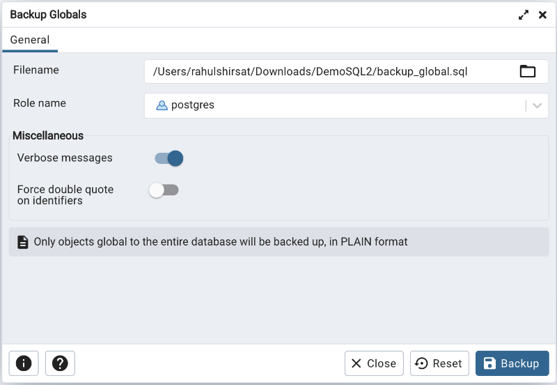

Backup Globals Dialog¶
Use the Backup Globals dialog to create a plain-text script that recreates all of the database objects within a cluster, and the global objects that are shared by those databases. Global objects include tablespaces, roles, and object properties. You can use the pgAdmin Query Tool to play back a plain-text script, and recreate the objects in the backup.
Use the fields in the General tab to specify the following:
Enter the name of the backup file in the Filename field. Optionally, select the Browser icon (ellipsis) to the right to navigate into a directory and select a file that will contain the archive.
Use the drop-down listbox next to Role name to specify a role with connection privileges on the selected server. The role will be used for authentication during the backup.
Move switches in the Miscellaneous field box to specify the type of statements that should be included in the backup.
Move the Verbose messages switch to the No position to exclude status messages from the backup. The default is Yes.
Move the Force double quote on identifiers switch to the Yes position to name identifiers without changing case. The default is No.
Click the Backup button to build and execute a command based on your selections; click the Cancel button to exit without saving work.
pgAdmin will run the backup process in background. You can view all the background process with there running status and logs on the Processes tab